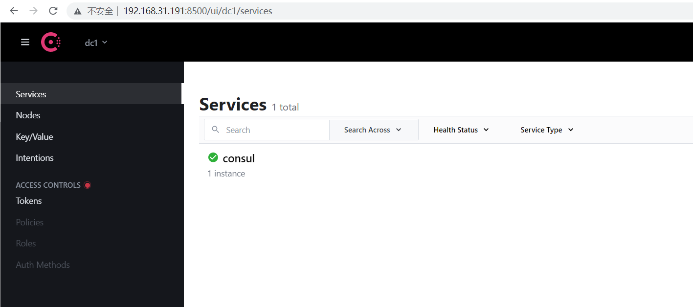
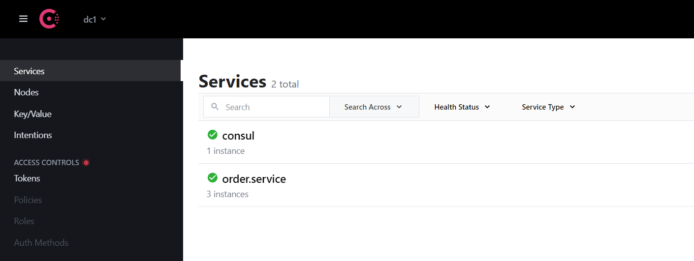
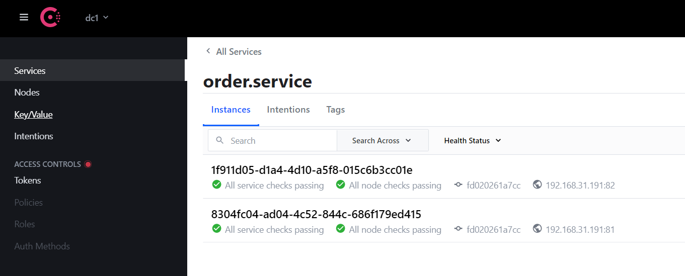
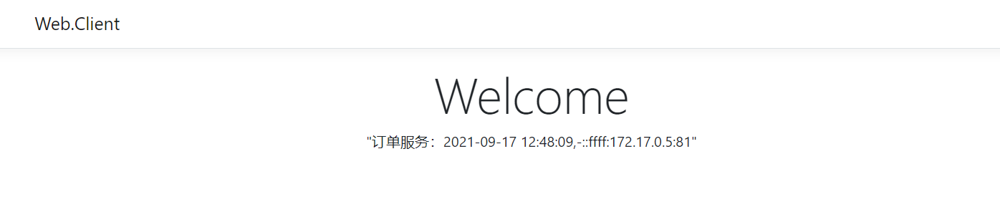
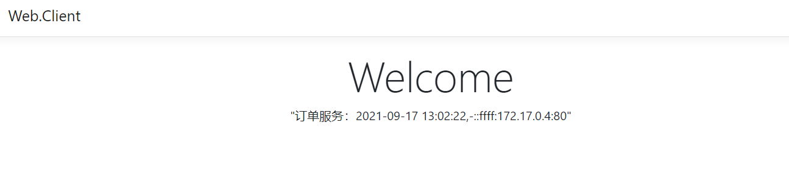

前言
上一篇说到要做到服务的灵活伸缩需要有一种机制来实现，这个机制就是服务注册与发现。这并不是必须的，如果服务实例很少并且很稳定，就没有必要使用。
概念
服务注册：简单理解就是有一个注册中心，每个服务实例启动时都去注册中心注册，告诉注册中心地址，端口等信息。同样删除时，也需要去注册中心删除，注册中心负责维护这些服务实例的信息
服务发现：既然注册中心维护了各个服务实例的信息，那么客户端通过注册中心就很容易能发现服务的变化。有了服务注册与发现，客户端就不用再去配置各个服务实例的地址，改为从注册中心统一获取
健康检查：注册中心要保证每个地址的可用状态，挂掉的实例不应该被客户端获取到，所以需要：健康检查。每个服务都需要提供一个用于健康检查的接口，这个接口不具备任何业务功能。服务注册时把这个接口的地址也告诉注册中心，注册中心会定时调用这个接口来检测服务是否正常，如果不正常，则将它移除，这样来保证了服务的可用性
常见注册中心有 Consul、ZooKeeper、etcd、Eureka。
Consul
Consul官网：https://www.consul.io ，主要功能有服务注册与发现、健康检查、K-V存储、多数据中心等，这里不做详细介绍。
这里选择使用Docker来部署Consul：
1 docker run -d -p 8500:8500 --restart=always --name=consul consul:latest agent -server -bootstrap -ui -node=1 -client='0.0.0.0'
agent： 表示启动 Agent 进程server：表示启动 Consul Server 模式client：表示启动 Consul Cilent 模式bootstrap：表示这个节点是 Server-Leader ，每个数据中心只能运行一台服务器。技术角度上来看 Leader 是通过 Raft 算法选举的，但是集群第一次启动时需要一个引导 Leader，在引导群集后，建议不要使用此标志ui：表示启动 Web UI 管理器，默认开放端口 8500，所以上面使用 Docker 命令把 8500 端口对外开放node：节点的名称，集群中必须是唯一的，默认是该节点的主机名client：Consul服务监听地址，这提供HTTP、DNS、RPC等服务，默认是 127.0.0.1 所以不对外提供服务，如果要对外提供服务改成 0.0.0.0join：表示加入到某一个集群中。 如：-json=192.168.0.11

这里看到Consul已经成功运行。
服务注册
订单服务项目使用Nuget 安装 Consul，然后添加相关代码：
ConsulHelper.cs：
1 2 3 4 5 6 7 8 9 10 11 12 13 14 15 16 17 18 19 20 21 22 23 24 25 26 27 28 29 30 31 32 33 34 35 36 37 38 39 40 41 42 43 44 45 46 47 48 49 50 51 52 public static class ConsulHelper { public static IApplicationBuilder RegisterConsul (this IApplicationBuilder app , IConfiguration configuration , IHostApplicationLifetime lifetime ) { var consulClient = new ConsulClient(c => { c.Address = new Uri(configuration["ConsulSetting:ConsulAddress" ]); }); var registration = new AgentServiceRegistration() { ID = Guid.NewGuid().ToString(), Name = configuration["ConsulSetting:ServiceName" ], Address = configuration["ConsulSetting:ServiceIP" ], Port = int .Parse(configuration["ConsulSetting:ServicePort" ]), Check = new AgentServiceCheck() { DeregisterCriticalServiceAfter = TimeSpan.FromSeconds(3 ), Interval = TimeSpan.FromSeconds(10 ), HTTP = $"http://{configuration["ConsulSetting:ServiceIP" ]} :{configuration["ConsulSetting:ServicePort" ]} {configuration["ConsulSetting:ServiceHealthCheck" ]} " , Timeout = TimeSpan.FromSeconds(5 ) } }; consulClient.Agent.ServiceRegister(registration).Wait(); lifetime.ApplicationStopping.Register(() => { consulClient.Agent.ServiceDeregister(registration.ID).Wait(); }); return app; } }
appsettings.json：
1 2 3 4 5 6 7 8 9 10 11 12 13 14 15 16 { "Logging" : { "LogLevel" : { "Default" : "Information" , "Microsoft" : "Warning" , "Microsoft.Hosting.Lifetime" : "Information" } }, "AllowedHosts" : "*" , "ConsulSetting" : { "ServiceName" : "order.service" , "ServiceIP" : "192.168.31.191" , "ServiceHealthCheck" : "/healthcheck" , "ConsulAddress" : "http://192.168.31.191:8500" } }
注意：这里没有配置ServicePort，所以如果本地直接运行项目会报错
Startup.cs：
1 2 3 4 5 6 7 8 9 10 11 12 13 14 15 16 17 18 public void Configure (IApplicationBuilder app, IWebHostEnvironment env, IHostApplicationLifetime lifetime ){ if (env.IsDevelopment()) { } else { } app.UseStaticFiles(); app.UseRouting(); app.UseEndpoints(endpoints => { endpoints.MapControllers(); }); app.RegisterConsul(Configuration, lifetime); }
OrdersController.cs：
1 2 3 4 5 6 7 8 9 10 11 12 13 14 15 16 17 18 [Route("[Controller]" ) ] [ApiController ] public class OrdersController : ControllerBase { private readonly IConfiguration configuration; public OrdersController (IConfiguration configuration ) { this .configuration = configuration; } [HttpGet ] public IActionResult Index ( { string result = $"订单服务：{DateTime.Now:yyyy-MM-dd HH:mm:ss} ,-{Request.HttpContext.Connection.LocalIpAddress} :{configuration["ConsulSetting:ServicePort" ]} " ; return Ok(result); } }
HealthCheckController.cs：
1 2 3 4 5 6 7 8 9 10 11 12 13 14 [Route("[controller]" ) ] [ApiController ] public class HealthCheckController : ControllerBase { [HttpGet ] public IActionResult Get ( { return Ok("Pong." ); } }
至此就完成了服务注册、取消注册、健康检查的代码编写，下面重新 build 镜像（过程略过）运行新的容器：
1 2 3 4 5 [root@centos-01 order.api.release] 89acc7d7035f2041a91bc1e1299464a5460290dd66b12161ee4e994d5548def2 [root@centos-01 order.api.release] 223be73a41e501e168fdc44459cd6f5851d565e60817dbd0047dff7718394e22 [root@centos-01 order.api.release]

至此，3个服务实例都已运行，并且成功注册到 Consul。测试一下服务停止会不会从Consul移除：
1 [root@centos-01 order.api.release]

这里需要注意：程序发生异常，健康检查不能正确响应的话，Consul也会移除。至此注册、发现、健康检查功能都完成了，下一步考虑客户端如何拿到这些服务实例的地址。
客户端
上面已经成功将服务注册到 Consul中，接下来就该客户端通过 Consul 去做服务发现了。客户端项目同样使用Nuget 安装 Consul，然后调整相关代码：
ServiceHelper.cs：
1 2 3 4 5 6 7 8 9 10 11 12 13 14 15 16 17 18 19 20 21 22 23 24 25 26 27 28 29 30 31 32 33 34 35 36 37 38 39 40 41 42 43 44 45 46 47 48 49 50 51 52 53 using Consul;using Microsoft.Extensions.Configuration;using RestSharp;using System;using System.Collections.Concurrent;using System.Linq;using System.Threading.Tasks;namespace Web.Client { public interface IServiceHelper { Task<string > GetOrder ( ; } public class ServiceHelper : IServiceHelper { private readonly IConfiguration configuration; public ServiceHelper (IConfiguration configuration ) { this .configuration = configuration; } public async Task<string > GetOrder ( { var consulClient = new ConsulClient(c => { c.Address = new Uri(configuration["ConsulSetting:ConsulAddress" ]); }); var services = consulClient.Health.Service("order.service" , null , true , null ).Result.Response; string [] serviceUrls = services.Select(p => $"http://{p.Service.Address + ":" + p.Service.Port} " ).ToArray(); if (!serviceUrls.Any()) { return await Task.FromResult("【订单服务】服务列表为空" ); } var client = new RestClient(serviceUrls[new Random().Next(0 , serviceUrls.Length)]); var request = new RestRequest("/orders" , Method.GET); var response = await client.ExecuteAsync(request); return response.Content; } } }
appsettings.json：
1 2 3 4 5 6 7 8 9 10 11 12 13 { "Logging" : { "LogLevel" : { "Default" : "Information" , "Microsoft" : "Warning" , "Microsoft.Hosting.Lifetime" : "Information" } }, "AllowedHosts" : "*" , "ConsulSetting" : { "ConsulAddress" : "http://192.168.31.191:8500" } }
以上代码就完成了对服务列表的获取，浏览器访问测试一下：

这时候如果停止其中一个服务实例，Consul中也会同步下线，客户端也就访问不到了，但是只要三个实例活着一个就可以正常访问。虽然这里解决了服务发现的问题，但是新的问题又来了：客户端每次调用服务都需要先去Consul中获取服务地址，不仅浪费资源还增加了请求的响应时间。如何保证不要每次请求都需要去Consul 获取地址的同时又可以拿到可用的地址列表呢？Consul 提供的解决方案是：Blocking Queries （阻塞的请求）。详情见官网：Blocking Queries 。
Blocking Queries
简单来说就是当客户端请求 Consul 获取地址列表时，需要携带一个版本号信息，Consul 会比较这个客户端版本号是否和 Consul 服务端的版本号一致，如果一致，则 Consul 会阻塞这个请求，直到 Consul 中的服务列表发生变化，或者到达阻塞时间上限；如果版本号不一致，则立即返回。这个阻塞时间默认是5分钟，支持自定义。如果启动一个线程专门去做这件事，就不会影响每次的用户请求了。这样既保证了客户端服务列表的准确性，又节约了客户端请求服务列表的次数。
调整代码：
IServiceHelper.cs 增加获取服务列表的接口方法：
1 2 3 4 5 6 7 8 9 10 11 12 13 14 15 16 17 18 19 20 21 22 23 24 25 26 27 28 29 30 31 32 33 34 35 36 37 38 39 40 41 42 43 44 45 46 47 48 49 50 51 52 53 54 55 56 57 58 59 60 61 62 63 64 65 66 67 68 69 70 71 72 73 74 75 76 77 78 79 80 81 82 83 84 using Consul;using Microsoft.Extensions.Configuration;using RestSharp;using System;using System.Collections.Concurrent;using System.Linq;using System.Threading.Tasks;namespace Web.Client { public interface IServiceHelper { Task<string > GetOrder ( ; void GetServices ( } public class ServiceHelper : IServiceHelper { private readonly IConfiguration configuration; private readonly ConsulClient consulClient; private ConcurrentBag<string > orderServiceUrls; public ServiceHelper (IConfiguration configuration ) { this .configuration = configuration; this .consulClient = new ConsulClient(c => { c.Address = new Uri(configuration["ConsulSetting:ConsulAddress" ]); }); } public async Task<string > GetOrder ( { if (orderServiceUrls == null ) return await Task.FromResult("【订单服务】初始化服务列表..." ); var client = new RestClient(orderServiceUrls.ElementAt(new Random().Next(0 , orderServiceUrls.Count()))); var request = new RestRequest("/orders" , Method.GET); var response = await client.ExecuteAsync(request); return response.Content; } public void GetServices ( { var serviceNames = new string [] { "order.service" }; Array.ForEach(serviceNames, p => { Task.Run(() => { var queryOptions = new QueryOptions { WaitTime = TimeSpan.FromMinutes(10 ) }; while (true ) { GetServices(queryOptions, p); } }); }); } private void GetServices (QueryOptions queryOptions, string serviceName ) { var res = consulClient.Health.Service(serviceName, null , true , queryOptions).Result; Console.WriteLine($"{DateTime.Now} 获取{serviceName} ：queryOptions.WaitIndex：{queryOptions.WaitIndex} LastIndex：{res.LastIndex} " ); if (queryOptions.WaitIndex != res.LastIndex) { queryOptions.WaitIndex = res.LastIndex; var serviceUrls = res.Response.Select(p => $"http://{p.Service.Address + ":" + p.Service.Port} " ).ToArray(); if (serviceName == "order.service" ) orderServiceUrls = new ConcurrentBag<string >(serviceUrls); } } } }

至此不需要每次都先请求服务列表，如果服务列表没有更新的话，获取列表的请求会一直阻塞直到设置的10分钟。这时候又发现新的问题：
每个客户端系统都去维护服务地址是否合理
服务的IP端口直接暴露给所有客户端是否安全
该模式下怎么做到客户端的统一管理